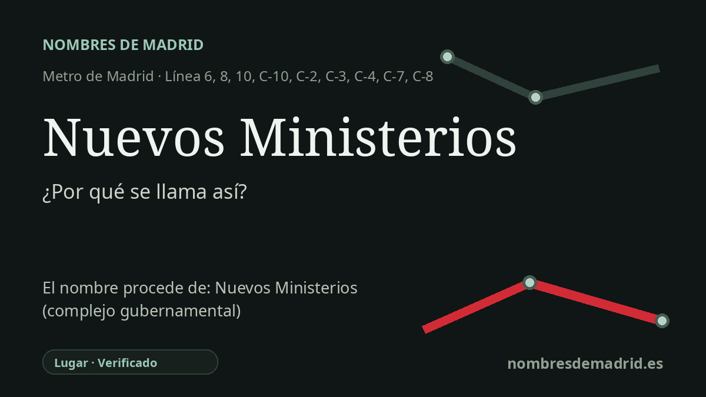

Publicado el · Investigación de Nombres de Madrid · Cómo verificamos cada origen · 7 fuentes consultadas
Respuesta rápida
Debe su nombre al complejo gubernamental de Nuevos Ministerios, en el paseo de la Castellana. El conjunto fue promovido durante la Segunda República por Indalecio Prieto, diseñado por Secundino Zuazo, interrumpido por la Guerra Civil y terminado con modificaciones tras la guerra.
La historia del nombre
La estación de Nuevos Ministerios debe su nombre directamente al complejo gubernamental situado encima y junto a ella: los Nuevos Ministerios del paseo de la Castellana. Es, por tanto, una estación con origen toponímico, no una dedicatoria a un solo ministro o arquitecto, aunque Indalecio Prieto y Secundino Zuazo sean esenciales para entender la historia.
El nombre procede de un gran proyecto urbano de la Segunda República. El catálogo patrimonial del Ayuntamiento de Madrid indica que Prieto, entonces ministro de Obras Públicas, encargó en 1932 a Zuazo la realización de un conjunto monumental de edificios públicos sobre los terrenos del antiguo hipódromo. El plan formaba parte de la prolongación de la Castellana hacia el norte y pretendía reunir dependencias estatales que estaban dispersas por la ciudad.
Las obras comenzaron en 1933, pero la Guerra Civil las interrumpió. Terminada la guerra, Zuazo fue depurado por el nuevo régimen y la finalización se encargó a otros profesionales, que mantuvieron en gran medida el proyecto inicial e introdujeron variaciones acordes con el nuevo poder político. Las fuentes municipales y turísticas suelen situar la finalización del conjunto en 1942, aunque la ocupación administrativa y las adaptaciones posteriores continuaron después.
La historia del transporte añade otra capa al nombre. El apeadero ferroviario de Nuevos Ministerios abrió primero, en 1967, dentro del túnel Atocha-Chamartín conocido popularmente como el "túnel de la risa". El Metro llegó más tarde: la primera estación de Metro en este punto se inauguró con la línea 6 el 11 de octubre de 1979, y las obras posteriores incorporaron las líneas 8 y 10, convirtiendo el nombre en una de las grandes referencias de intercambio de Madrid.
La etimología, por tanto, es segura: la estación tomó el nombre del complejo ministerial existente y del entorno urbano identificado por él. El conjunto tuvo un encargo y diseño republicanos, quedó interrumpido por la guerra y se terminó en la posguerra con modificaciones; no fue una creación íntegra del franquismo.